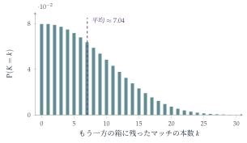

STEP II 1992、第16問
先に進む前に問題を読んでおこう。問題は STEP Support Programme の問題データベースにある： step.maths.org/questions/92-s2-q16
導入
数学者ステファン・バナッハ（Stefan Banach）は大変なヘビースモーカーで、左右のポケットにマッチ箱を一つずつ入れていた、という話が伝わっている。マッチが欲しくなるたびに、彼はどちらかのポケットを無作為に選んだ。ある日、彼は箱の一つが空であることに気づいた。もう一方の箱には何本のマッチが残っていたか。これがバナッハのマッチ箱問題（Banach’s matchbox problem）であり、ヒューゴ・シュタインハウス（Hugo Steinhaus）がバナッハにちなんで考案したものである。本問は、その問題をタクシー運転手とお菓子に置き換えたものである。
微妙な点は「気づく」という言葉にある。運転手は、ある袋の最後のお菓子を取った時点では袋が空になったことに気づかず、次にその袋に手を伸ばしたときに初めて気づく。したがって考えるべき事象は、「トフィーに手を伸ばしたとき、\(n\) 個のトフィーがすでにすべてなくなっている」というものである。これが \(N\) 回目に手を伸ばしたときに起こる場合の数を数えることは、二項分布（binomial distribution）の格好の演習になる。そしてバナッハの問題の答えには意外な特徴がある。もう一方の箱に残っているマッチの本数として最も起こりやすい値は \(0\) なのである（\(1\) と同率である）。
取りかかる前に
運転手が \(N\) 回目に手を伸ばしたときにトフィーがなくなっていることに気づくためには、\(N\) 回目はどちらの袋に手を伸ばしたのでなければならないか。それより前の \(N - 1\) 回には何が含まれていなければならないか。
\(N\) 回目はトフィーに手を伸ばしたのでなければならず、それより前の \(N - 1\) 回では、ちょうど \(n\) 個のトフィー（すべて）と \(N - 1 - n\) 個のミントを取っていなければならない。さらに、それより前にミントの袋が空であることに気づいていてはならない。
順を追って解く
段階 1 トフィーがなくなっていることに気づく
最初の \(N - 1\) 回はどのような順序で起こりうるか。\(N - 1 - n\) にどのような条件があれば、ミントの袋が空であることに一度も気づかずに済むか。
トフィーに手を伸ばした \(n\) 回は、最初の \(N - 1\) 回のうちのどの \(n\) 回であってもよい。ミントがなくなった後にミントに手を伸ばすことが一度もないのは、取ったミントが高々 \(m\) 個、すなわち \(N - 1 - n \leq m\) のときである。よって \(n + 1 \leq N \leq n + m + 1\) に対して \[\mathrm{P}(T_N) = \binom{N - 1}{n}p^{n+1}q^{N-1-n},\] が成り立つ。ここで \(T_N\) は事象「\(N\) 回目に手を伸ばしたときにトフィーがなくなっていることに気づく」である（因子 \(p^{n+1}\) には \(N\) 回目そのものも含まれている）。
段階 2 ミントがなくなっていることに気づく
役割を入れ替えて同じ議論をすれば、\(m + 1 \leq N \leq n + m + 1\) に対して \[\mathrm{P}(M_N) = \binom{N - 1}{m}q^{m+1}p^{N-1-m}.\]
段階 3 条件付き確率
\(N\) 回目に手を伸ばしたときに空の袋に気づいたことがわかっているとする。それがトフィーであった確率はいくらか。
事象 \(T_N\) と \(M_N\) は排反（mutually exclusive）であるから、条件付き確率（conditional probability）は \[\mathrm{P}(\text{トフィー} \mid \text{発見時刻 } N) = \frac{\binom{N-1}{n}p^{n+1}q^{N-1-n}}{\binom{N-1}{n}p^{n+1}q^{N-1-n} + \binom{N-1}{m}q^{m+1}p^{N-1-m}},\] となる。ただし、二項係数（binomial coefficient）は上で述べた範囲の外では \(0\) とみなす。（\(N \leq m\) ならば、なくなりうるのはトフィーだけであり、確率は \(1\) である。同様に、\(N \leq n\) かつ \(N > m\) ならば確率は \(0\) である。）■
\(n = m\) かつ \(p = q = \frac12\) のときに、この公式を確かめよ。対称性（symmetry）から、ありうるすべての \(N\) に対して答えは \(\frac12\) になるはずである。実際にそうなるか。
振り返り
事象を正確に読む。「気づく」とは、最後のお菓子を取ることではなく、空の袋に手を伸ばすことであった。
最後の一歩を固定し、残りを数える。\(N\) 回目を固定すると、最初の \(N - 1\) 回は任意の順序でよく、二項係数が現れた。
境界を確かめる。制約 \(N - 1 - n \leq m\) と \(N - 1 - m \leq n\) によって、起こりえない経過が除外された。
背後にある数学
バナッハのマッチ箱
バナッハの設定では、どちらの箱にも最初 \(n\) 本のマッチが入っており、どちらのポケットも等確率で選ばれる。初めて箱が空であることに気づいたとき、もう一方の箱に入っているマッチの本数を \(K\) とする。\(K = k\) となるためには、空の箱からは \(n\) 本、もう一方の箱からは \(n - k\) 本を任意の順序で取り、その後もう一度空の箱に手を伸ばさなければならない。また、空になるのはどちらの箱でもよい。よって \[\mathrm{P}(K = k) = 2\binom{2n - k}{n}\Bigl(\frac12\Bigr)^{2n - k + 1} = \binom{2n - k}{n}\Bigl(\frac12\Bigr)^{2n - k}.\] これらの確率は \(k\) について減少するが、例外として \(\mathrm{P}(K = 0) = \mathrm{P}(K = 1)\) である（図 12.17.1）。残っている本数の期待値（expected value）はおよそ \(2\sqrt{n/\pi} - 1\) であり、各箱に \(50\) 本ずつ入っている場合はおよそ \(7\) 本となる。\(\sqrt n\) は、\(2n\) 回の無作為な選択の後に二つの箱の間に生じる偏りの典型的な大きさであり、誕生日問題（第 9.9 節）やランダムウォーク（random walk）に現れるのと同じ平方根の法則である。

負の二項分布
各回が確率 \(p\) で成功する独立な試行において、\(r\) 回目の成功を得るまでに必要な試行回数は負の二項分布（negative binomial distribution）\(\mathrm{P}(N = k) = \binom{k - 1}{r - 1}p^rq^{k-r}\) に従う。タクシー運転手の問題は、二つの負の二項過程（トフィーとミント）の競争であり、どちらも袋のお菓子の個数より一つ多い「成功」を必要とする。負の二項分布は保険（請求件数）、生態学（群れをなす動物の個体数）、遺伝学などに現れ、ポアソン分布（Poisson distribution）より柔軟な代替としてしばしば用いられる。
関数解析（functional analysis）の創始者の一人であるステファン・バナッハは、ルヴフ（現在のリヴィウ）のスコティッシュ・カフェで数学の多くを行った。彼と同僚たちはウェイターが預かるノート、すなわちスコティッシュ・ブック（Scottish Book）に問題を書き込み、その懸賞はビール一杯から生きたガチョウまでさまざまであった。バナッハの師であるヒューゴ・シュタインハウスは、バナッハの喫煙癖を称えるスピーチのためにマッチ箱問題を考案した。この問題を初めて活字で解析したのは、ウィリアム・フェラー（William Feller）による1950年の名高い確率論の教科書である。
思考のスキル
ある過程が特定の時刻に特定の仕方で終わる確率を求めるには、最後の一歩で起こることを固定し、そこに至る経過を数えよ。
大学では、これは負の二項分布、ランダムウォークの初到達時刻（first-passage time）、そして第 9.10 節の鏡像原理（reflection principle）の基礎となる。
次の一歩
小さな場合。\(n = m = 1\) かつ \(p = \frac12\) のとき、起こりうる列をすべて書き出し、\(N\) の分布を求めよ。
バナッハの公式。\(n = 1\) と \(n = 2\) に対して \(\sum_{k=0}^{n}\binom{2n - k}{n}2^{-(2n-k)} = 1\) が成り立つことを確かめよ。
同率の最大値。バナッハの問題において、すべての \(n\) に対して \(\mathrm{P}(K = 0) = \mathrm{P}(K = 1)\) であることを示せ。
先になくなるのはどちらか。タクシー運転手の問題で、\(n = m = 2\) かつ \(p = \frac23\) のとき、（時刻を問わず）最初に空であると気づかれる袋がトフィーである確率を求めよ。
さらに学ぶために
William Feller, An Introduction to Probability Theory and Its Applications, Vol. 1（Wiley）の第 VI 章。バナッハの問題を世に紹介した文献である。
R. Daniel Mauldin (ed.), The Scottish Book（Birkhäuser）。スコティッシュ・カフェの問題集で、解説付き。
Geoffrey Grimmett & Dominic Welsh, Probability: An Introduction（Oxford University Press）。負の二項分布について。